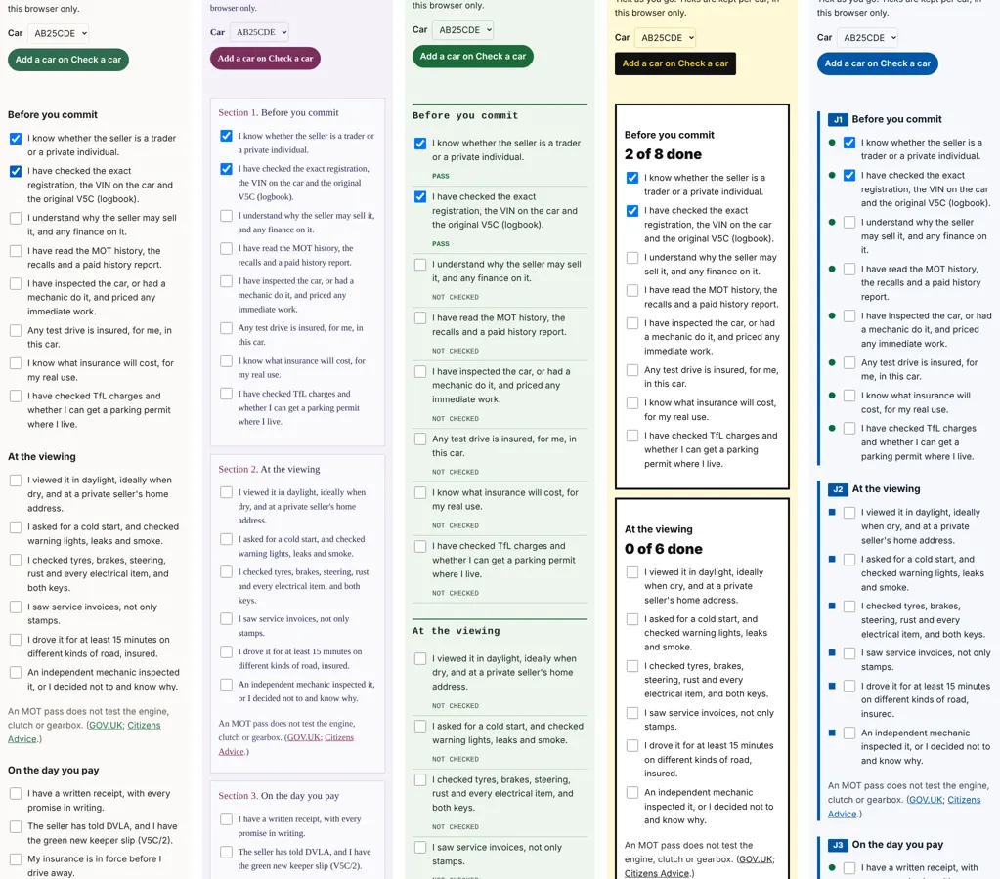

Synthetic users: Car Buyer, round 6 (the checklist in five structures)
Site: https://car-buyer.tool.sovereignweb.site/ at 8cd09aa (v0.1.7). Run: 23 November 2026, about 17:35 UTC, by design.b.rounds. Would you use it? 5 of 5. Would you show a friend? 4 of 5. Look 3.4 (4, 3, 4, 3, 3). Home page: five ideas, by 5 of 5. Checklist: five skins, by 3 of 5. Nobody said "wow". The review.
The same personas as round 5, with a new question: would you show this to a friend who is buying a car? The captures were taken with one car saved (AB25 CDE). The first two checklist items were ticked in the light phone captures only, so the dark and desktop captures show them unticked. That is how I captured it, not a fault in the site. These are simulations, and never replace the measured checks or a real person.
| Persona | Use it? | Show a friend? | Look | Best | Weakest | The checklist |
|---|---|---|---|---|---|---|
| First-time buyer | yes | yes | 4 | Windscreen card (the "2 of 8 done" counter) | Logbook | five ideas: "They're actually different to use." |
| Parent | yes | yes ("a little wary" of the draft notice) | 3 | MOT certificate (a Pass against each item) | Windscreen card (an empty first-year box) | five skins: "the same list in the same order" |
| Londoner | yes | yes | 4 | Road atlas (London as its own junction) | Forecourt | five ideas |
| Low-vision reader | yes | no | 3 | Windscreen card (heaviest borders, biggest type) | MOT certificate (small grey Pass labels) | five skins |
| Design critic | yes | yes ("for the content, not for the designs") | 3 | MOT certificate (the one idea carried through both pages) | Logbook | five skins: "one added device per design" |
Best-design votes: Windscreen card 2, MOT certificate 2, Road atlas 1.
